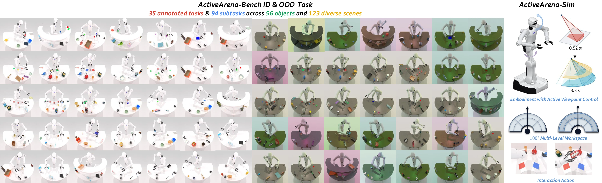
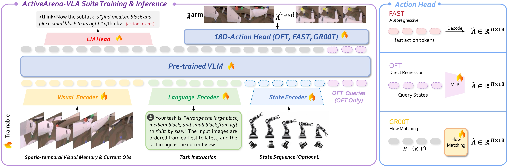
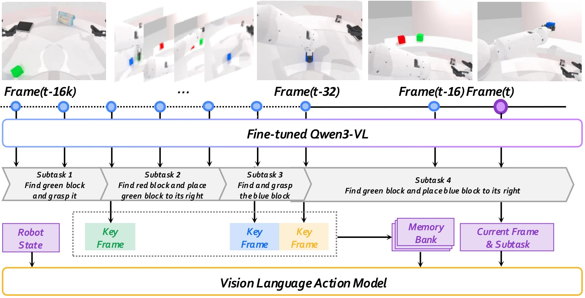

ActiveArena: Benchmarking and Understanding Active Perception in Robotic Manipulation
1 Beihang University 2 Beijing Academy of Artificial Intelligence
3 Peking University 4 Tsinghua University
Move to see.
Remember to act.
ActiveArena is the first comprehensive and standardized simulator–benchmark–baseline suite for active perception in robotic manipulation.
Abstract
Active perception and manipulation are crucial for robots to interact with complex scenes. Existing benchmarks struggle to evaluate how robots effectively acquire and maintain information in memory in an active manner. To this end, we introduce ActiveArena-Sim, an active-perception simulator with controllable viewpoints and large-scale workspaces as the foundation. Built on this, we propose ActiveArena-Bench, which comprises 35 tasks across 5 fine-grained categories, covering visual exploration and interactive information acquisition.
Each task is difficult to solve from passive observations alone, requiring multi-round evidence acquisition and memory-based reasoning. The benchmark provides rich memory annotations, standardized training data, and ID/OOD protocols featuring disjoint scenes, unseen distractor configurations, and novel backgrounds. We further present ActiveArena-VLA, a modular suite of 13 vision-language-action configurations for controlled studies of memory writing, memory capacity, proprioceptive state, subtask supervision, and high-level planning.
ActiveArena Benchmark
A benchmark for manipulation when the initial observation is insufficient. Policies must search for evidence, retain it across views, and use it to execute an 18-dimensional action.

Modular VLA Suite
The release separates visual memory, language supervision, proprioceptive state, and action prediction so that each source of active-perception capability can be studied independently.


Rollout Demonstrations
The head camera is the policy observation. Observer and world cameras are included for visualization only.
Observer and world views are shown for explanation only. The policy receives the head camera view.
Simulation Results
Task-macro success rates reported in the paper. Each cell shows ID / OOD (%); Avg. is computed over all 35 tasks.
| Method | Mem. | SS | SL | ML | MD | IA | Avg. |
|---|---|---|---|---|---|---|---|
| FAST-WAM | No | 59.60 / 4.00 | 40.38 / 1.00 | 25.67 / 0.00 | 22.40 / 5.20 | 12.00 / 3.33 | 35.60 / 2.06 |
| π0.5 | No | 41.20 / 5.60 | 22.38 / 0.63 | 1.67 / 0.00 | 1.60 / 1.20 | 2.67 / 5.33 | 16.86 / 1.71 |
| SaPaVe | No | 48.80 / 40.80 | 19.88 / 5.88 | 10.67 / 3.00 | 6.00 / 2.80 | 25.33 / 12.67 | 20.91 / 10.51 |
| HiF-VLA | Yes | 16.80 / 14.00 | 6.88 / 1.13 | 0.00 / 0.00 | 17.60 / 17.20 | 30.67 / 18.67 | 10.69 / 6.57 |
| MemER | Yes | 81.20 / 66.00 | 33.88 / 18.63 | 18.33 / 5.67 | 11.60 / 6.40 | 40.00 / 42.00 | 35.31 / 23.43 |
| MemoryVLA | Yes | 46.00 / 34.40 | 20.88 / 6.50 | 14.00 / 2.00 | 9.20 / 4.40 | 28.00 / 27.33 | 22.23 / 11.20 |
| ActiveArena-OFT | Yes | 80.40 / 70.80 | 74.50 / 54.38 | 53.33 / 33.33 | 31.60 / 27.20 | 44.00 / 35.33 | 62.97 / 47.60 |
| ActiveArena-Plan | Yes | 79.20 / 69.60 | 73.38 / 52.63 | 49.67 / 30.00 | 28.00 / 24.80 | 42.00 / 33.33 | 60.97 / 45.54 |
BibTeX
@misc{activearena_manuscript,
title = {ActiveArena: Benchmarking and Understanding Active Perception in Robotic Manipulation},
howpublished = {\url{https://leeibo.github.io/ActiveArena/}}
}The project homepage currently serves as the paper-page placeholder.